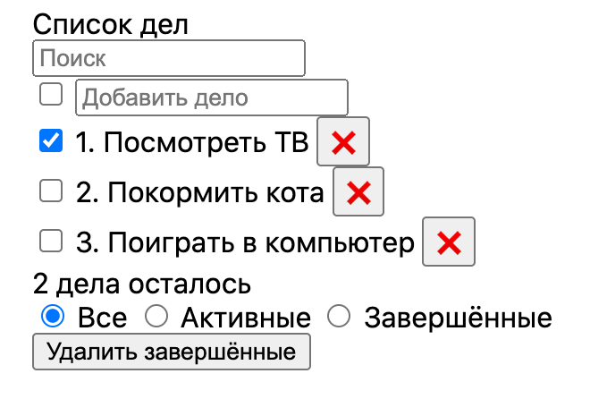

12. Electron - desktop-приложение
Electron
Electron - это библиотека, позволяющая создавать кросплатформенные desktop-приложения на основе NodeJS и Chromium.
Чтобы создать приложение на Electron выполните из терминала:
npx create-electron-app todo-app
Чтобы можно было использовать модуль fs и path в файле src/index.js поправьте код:
// Create the browser window.
const mainWindow = new BrowserWindow({
width: 800,
height: 600,
});
на
// Create the browser window.
const mainWindow = new BrowserWindow({
width: 800,
height: 600,
webPreferences: {
nodeIntegration: true,
},
});
Создайте файл src/script.js. В файле src/index.html подключите этот скрипт:
<body>
<h1>💖 Hello World!</h1>
<p>Welcome to your Electron application.</p>
<script src="script.js"></script>
</body>
Теперь в файле src/script.js вы можете писать код вашего приложения.
Чтобы запустить приложение введите команду:
npm start
Чтобы создать приложение, готовое для распространения:
npm make
HTML
Изучите Краткий курс HTML 5, чтобы научиться создавать документы на HTML. Пока можно читать не все главы, а только эти: 1-6, 12, 13, 15.
Задание 12.1
Создайте Electorn-приложение, которое бы выглядело примерно таким образом (пока страшненько, потому что без стилей):

CSS
Посмотрите видеоурок по CSS https://www.youtube.com/watch?v=iPV5GKeHyV4 А токже видеоурок по flexbox https://itproger.com/course/one-lesson/13
Задание 12.2
Стилизуйте ваше Eltcron-приложение, чтобы оно выглядело примерно так (хотя можете стилизовать как вам угодно):